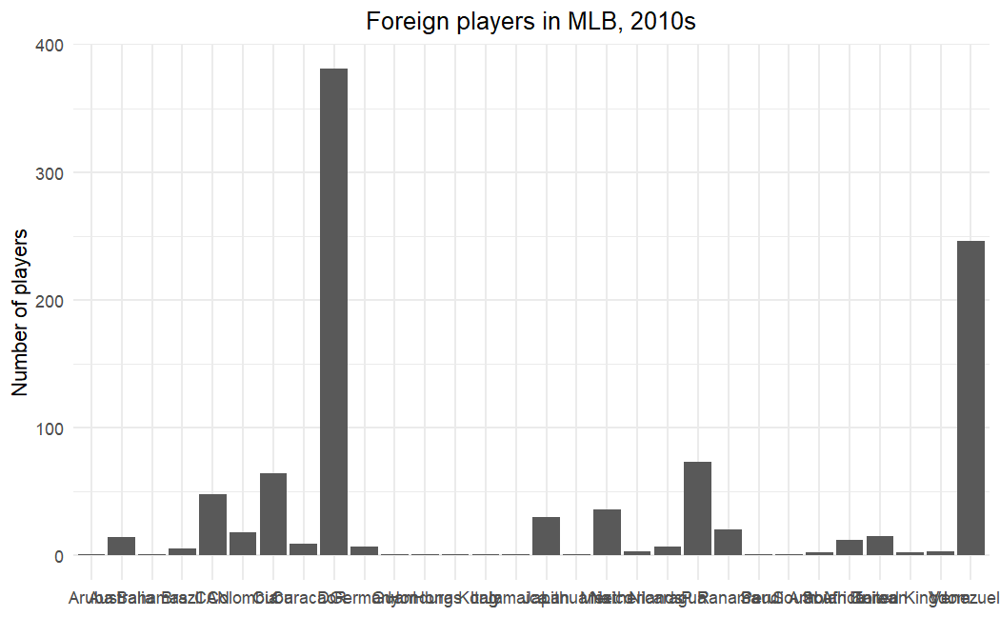
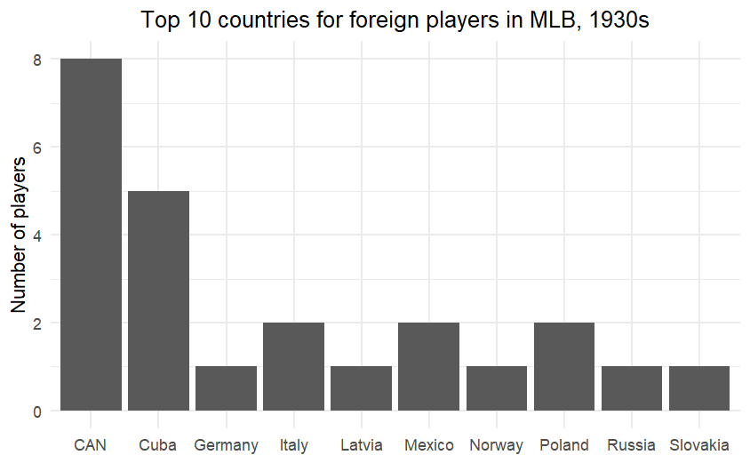
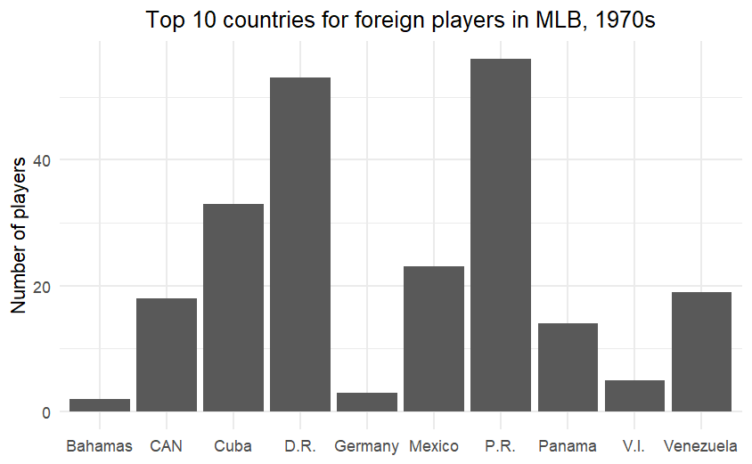
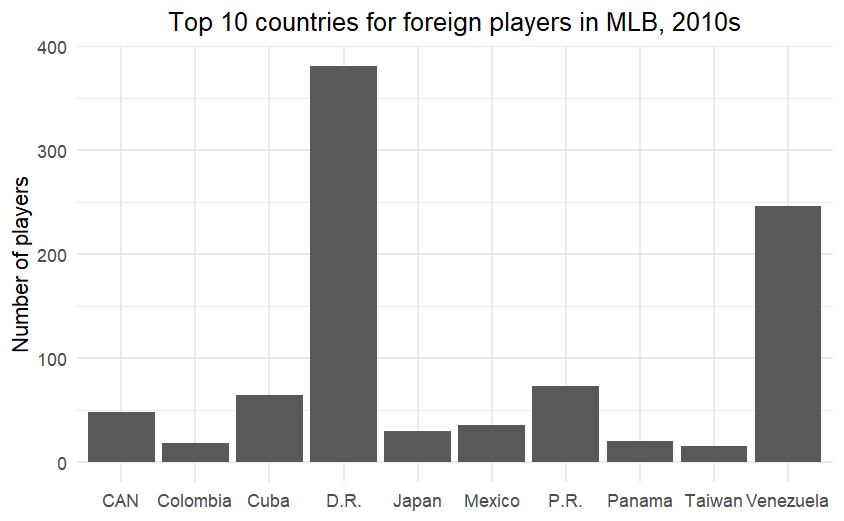
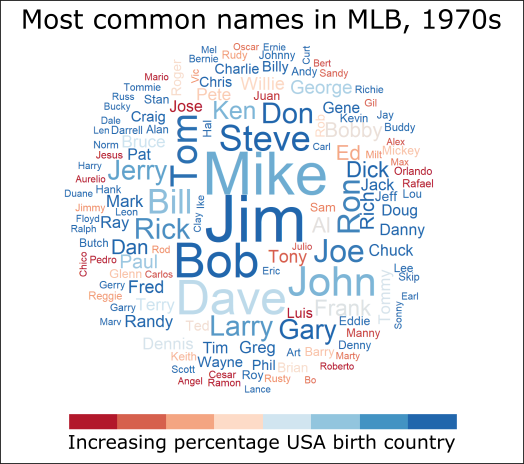
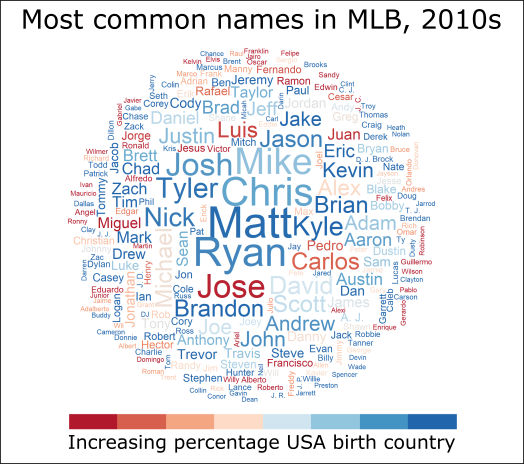

![]()
Note - this post was done before my work at EL Education, where Quarto and R are utilized not just for analysis, but for communication as well. Future posts will center code blocks and be easier for others to work with.
Problem: How do we demonstrate the growth of MLB as an international sport?
I finished the truly excellent Analyzing Baseball Data with R, and wanted to think about the opportunities that the different databases afforded that perhaps were not covered in the book. One of those opportunities was in thinking about where MLB has moved as a sport that pulls players from across the world.
Data:
Sean Lahman is an investigate reporter and sabermatrician who keeps an open source database with complete batting and pitching statistics for the major leagues from 1871 through 2021. In R, you can access this database by installing the Lahman package.
One tiny issue you have to overcome, however, is that it keeps discrete databases of Batting statistics, Pitching statistics and a Master list (called Player). The Master list, which gives the country of birth, does not give which seasons a player played.
In addition, a bar graph which shows every single country that a player was born in will get more than a little bit messy. That graph is shown here.

In the end, it would be nice to have a graphical representation of just the top countries, and to also think of a better visualization to show the greater diversity present in the game today.
Solution
The issues above can be solved in a few different ways:
- Use
rbind,left_joinanddistinctto pull together players from the Batting and Pitching databases, add their birth country, and then eliminate duplicates. - Create a ‘decade’ variable that lets you separate players into the decades that they played (allowing a player to show up multiple times across decades).
- Take advantage of
group_byto count players in different countries, or to visualize players by their name. - Experiment with
sliceto make column graphs with only the top 10 countries, and with thewordcloudpackage to visualize diversity through the names of the players themselves.
Graphs, and Observations
I started out being interested in the countries that players came from. Here are three graphs, showing the top 10 countries for foreign players in the 1930s, 1970s (which was only one decade after all teams were integrated), and the 2010s.

With 8 players representing Canada, it’s pretty easy to see that MLB was not drawing international players in the 1930s.

The influence of Latin American players is well underway by the 1970s, with Puerto Rico leading the way.

The y-axis definitely gives it away! It also made me want to understand the Cuban players in the 1930s, or how Venezuela became a pipeline for players (and it explains in part why so many play in the Venezuelan league in the off-season).
Really, though, I wanted a better representation of this diversity; something that put names to the players. So I defined a diversity variable, loosely defined as the percentage of players with a given name who were born out of the country, and then created word clouds of most common names in baseball. What follows are those word clouds for the 1970s and 2010s.

In this word cloud, Jim and Mike are the most common names in baseball, with players named Jim and Bob being the most likely to be born within the United States.

For the 2010s, there is a greater diversity of names and a greater diversity of players born outside of the country. This word cloud (of the 400 most common names) allows one to see that diversity in a way that a column graph cannot do.
Walking through the Code
We’ll be using graphs and wordclouds from the tidyverse and wordcloud package, and we’ll also load the Lahman package for our data. I like using RColorBrewer for palettes.
library(tidyverse)
library(Lahman)
library(RColorBrewer)
library(wordcloud)Using rbind, mutate and left_join allows us to create a list of batters and pitchers, complete with their birth country, for each decade that the dataset allows.
DecadeList <- rbind(Batting[,c("playerID","yearID")],Pitching[,c("playerID","yearID")])
DecadeList <- DecadeList %>% mutate(decade=10*floor(yearID/10))
DecadeList <- distinct(DecadeList,playerID,decade,.keep_all=TRUE)
DecadeList <- left_join(DecadeList[,c("playerID","decade")],People[,c("playerID","birthCountry","nameFirst","nameLast")],by="playerID")
DecadeList <- drop_na(DecadeList)In order to create our word cloud, we will need a new variable, which will let us know whether someone was born in the United States, or not. From this variable, we can group the dataset by first name and decade, and then find the average of everyone in those groups.
DecadeList <- mutate(DecadeList,homegrown=as.integer(birthCountry=="USA"))
Means <- DecadeList %>% group_by(nameFirst,decade) %>% summarize(Average=mean(homegrown))
DecadeList <- left_join(DecadeList,Means,by=c("nameFirst","decade"))Now we have everything for our column graphs! Using dplyr, we can group the data by country, find a count, and then ungroup them to graph. Code below only for 1970, but this could be done for any decade.
Decade1970 <- DecadeList[DecadeList$decade==1970&DecadeList$birthCountry!="USA",]
Decade1970USA <- DecadeList[DecadeList$decade==1970,]
Decade1970 %>% group_by(birthCountry) %>% count(sort = TRUE) %>% ungroup() %>% slice(1:10) %>% ggplot(aes(x=birthCountry,y=n))+geom_col()+theme_minimal()+theme(legend.position="none", axis.title.x=element_blank(),plot.title=element_text(hjust = 0.5))+labs(title="Top 10 countries for foreign players in MLB, 1970s",y="Number of players")Creating the word cloud requires us to bring back the Means database, and to find a way to shorten the database to just the names in a decade, the number of people with that name, and the percentage of those people born in the United States. By ordering the data, we can be sure that they are colored correctly in the cloud as well.
Decade1970count <- Decade1970USA %>% group_by(nameFirst) %>% count()
Means1970 <- Means[Means$decade==1970,]
Decade1970count <- left_join(Decade1970count,Means1970,by="nameFirst")
Decade1970count <- Decade1970count[order(Decade1970count$Average),]
color_range_number <- length(unique(Decade1970count$Average))
wordcloud(Decade1970count$nameFirst,Decade1970count$n,max.words=300,random.order=FALSE,ordered.colors=TRUE, colors=colorRampPalette(brewer.pal(6,"RdBu"))(color_range_number)[factor(Decade1970count$Average)])And there you have it! A note - wordclouds are not like other graphs that you create, in that they are straight image files. This means that, to give them a title and a legend, it’s easiest just to import them into an image editor (I use Inkscape) and deal with it there.
To learn more
The following links helped me think through this problem. In particular, figuring out how to create a word cloud that was colored by another variable was a tricky problem to figure out:
- Stack Overflow Post on Wordclouds
- A tutorial I used when first learning wordcloud by Céline Van den Rul
Citation
@online{russell2022,
author = {Russell, John},
title = {Understanding {Diversity} in {Baseball}},
date = {2022-03-22},
url = {https://drjohnrussell.github.io/posts/2022-03-22-diversity-baseball/},
langid = {en}
}